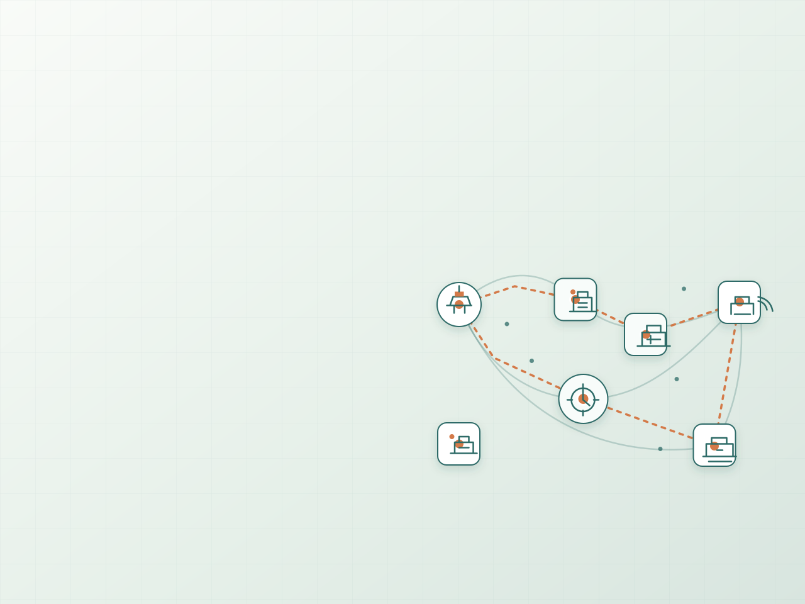
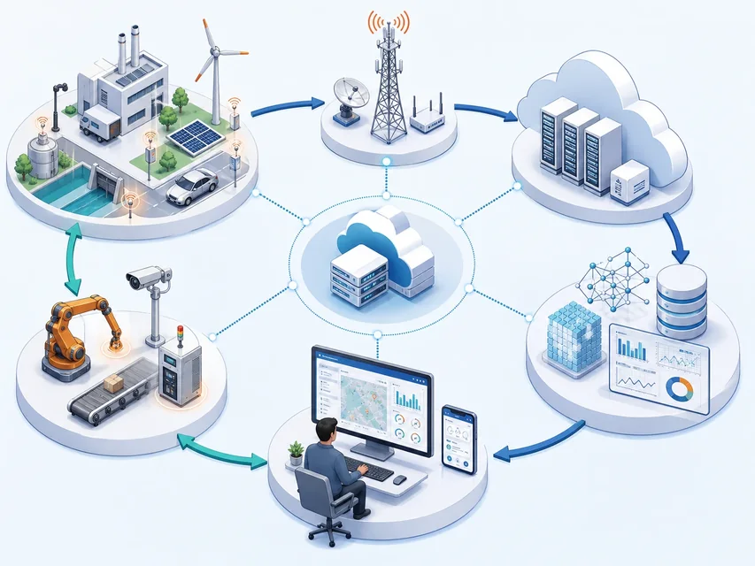
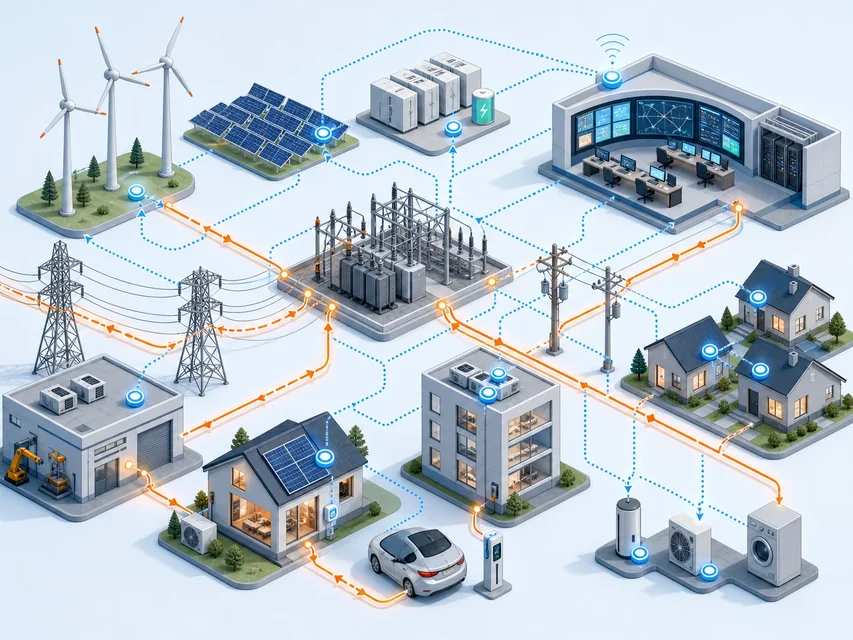

看到
传感器、标识和定位让系统知道对象是谁、在哪里、处于什么状态

用运行记录检查服务，用可比指标评价改善
 VER. 2608
Built with impress.js
VER. 2608
Built with impress.js
用运行记录解释设备与人的分工，再用可比指标评价效果
还要知道何时开关、谁确认策略、是否真的省电、误关后怎样恢复
教学情境：L17报告20lx，控制器按夜间规则发出开灯指令。灯具回报已开，管理人员再核对照度与用电量

云平台非必需；关键是传感器看到什么、谁判断、执行器做什么、结果回给谁
传感器、标识和定位让系统知道对象是谁、在哪里、处于什么状态
规则、模型或人据输入决定行动，并记下数据与版本
执行器、服务或人改变照明、调度等流程，再记录实际结果供下一次判断
比较前后用水时，还要核对天气、作物和测量方法
| 记录 | 可以说明什么 | 还需核对什么 |
|---|---|---|
| 改造前每天用水100升，之后80升 | 本次观察减少20升 | 天气、地块与作物差异 |
| 同时叶片萎蔫次数增加 | 用水下降可能伴随作物受损 | 作物长势、阈值及读数误差 |
| 加入传感器和计算设备 | 系统增加了设备与维护成本 | 净收益、耗电和维修工作 |
这些数字是教学假设；评价应用要同时看效率、安全、体验与可持续性
按下表的教学记录判断已有能力，并写出下一条需要补查的记录
| 场景 | 已提供的记录 |
|---|---|
| 路灯L18 | 收到亮度20lx与开灯指令；没有动作回执和用电统计 |
| 居家监护 | 心率记录已上传，护士可查看；没有告警接收和处置记录 |
| 地块A灌溉 | 湿度25%时发出开阀指令，阀门报告已开；没有水流和作物记录 |
| 共享单车 | 有车辆位置、订单和开锁回执；没有还车与费用记录 |
监测也属于物联网应用；判断控制闭环时，还要核对动作与实际结果
能量流表示电能传送，信息流传递测量和指令，两者共同支撑供电
发电→输电→变电→配电→用电
图例：橙色实线＝能量流；蓝色虚线＝跨环节信息／控制流

保护装置按规则快速响应；调度人员按权限审批调整与恢复
仪表测量设备状态、负荷与电能质量；保护装置不等逐次审批才动作
平台汇集数据，帮助调度人员预测用电需求、诊断故障，并安排巡检和调整供电
用户可通过分布式发电、储能或调整用电时间，参与供需调节
关键控制需要隔离和授权；不同环节按规程调整、检修与恢复
| 环节 | 测量与用途 | 控制和责任 |
|---|---|---|
| 发电侧 | 监测机组，预测负荷及风光出力波动 | 调度员按权限调整出力、安排检修 |
| 输变配侧 | 监测线路和站点，定位故障 | 保护装置快速响应，运维按预案抢修恢复 |
| 用电侧 | 电表与家庭能源管理记录需求 | 告知峰谷调整规则，允许选择，照顾不便使用者 |
这些对象可按场景组合，不表示每个系统都必须有同一种平台和网络
典型分工（可组合）：人／车／路／环境 → 感知／连接 → 平台／空间数据 → 调度／服务
摄像、雷达、车载终端、信号机、路侧设施与移动终端
车内网络、车联网、移动通信、路侧通信与互联网
数据库、云计算、地理信息系统 GIS、数字孪生和数据分析
收费、公交、导航、应急、协同驾驶和完整出行服务
车辆与车、路、人或网络通信，支持部分交通协同任务
车辆共享速度、位置、意图和风险，支持编队、避碰与协同
车辆与信号灯、道路、收费和施工设施交换信息
车辆与行人、骑行者等参与者或其设备交换提醒和通行信息，帮助保护弱势交通参与者
车辆接入平台和网络，获得地图、服务、调度与远程支持
完整出行 Complete Trip连接起点到终点的多段服务，V2X只支持其中部分任务
| 一次出行 | 需要配合的服务 | 应检查什么 |
|---|---|---|
| 步行到站 | 导航、无障碍通道 | 路线是否可走，服务有无覆盖 |
| 乘车与换乘 | 公交到站预报、接续班次 | 消息是否及时，错过班次后谁调整 |
| 到达目的地 | 下车点与末段步行指引 | 不同服务能否衔接，故障后向谁求助 |
协同驾驶不等于全程服务可靠；还要处理误报、缺少覆盖与服务交接
程序按规则关灯，用户仍应能查看原因、拒绝执行或手动开灯
采集状态、执行动作；受算力、电量和物理安全约束
连接家中设备、转换协议，让设备在本地交换信息；也要隔离访问，并安排断网后的操作
保存规则、模型和历史记录，提供学习与远程服务，并管理访问权限和软件更新
显示设备状态，接收用户要求并请用户确认；用户也能拒绝、撤销或改为手动操作
教学规则要求有人且光照低于50lx，用户可以随时改为手动控制
书房传感器报告有人，光照为20lx
家庭网络把读数送到本地网关
网关检查有人且20＜50，发出开灯指令
灯具开灯并回报状态，用户可查看原因或手动关灯
用户也应能拒绝非必要收集；断网时保留本地开关等基本操作
系统要结合地点和使用情况判断关哪盏灯；关错后，用户应能立即手动开回去
从语音、手势、表情、位置、时间和习惯推断模糊需求
按敏感度和任务选择本地或云端；本地适合快速、离线或敏感控制，云端适合远程访问与长期学习
执行高风险动作前要确认，出错时及时提示，并让用户能停止或接管；断网时也要有处理办法
服务更个性化，不代表用户同意无限收集；每类数据都应有明确用途
| 数据 | 可能用途 | 必须提供的控制 |
|---|---|---|
| 摄像头、麦克风 | 安防、交互、照护 | 只采所需内容，提供物理开关，告知谁在访问 |
| 门锁、位置 | 进出与自动化 | 核实身份，避免认错后误开，保留人工开锁 |
| 健康、能耗 | 关怀与节能 | 本地优先，限定用途，可撤回共享 |
Matter基于IP约定设备功能；接入同一网络仍需核对功能兼容
| 层面 | 家居例子 | 要查什么 |
|---|---|---|
| 网络连接 | Wi-Fi或Thread等网络 | 设备能否建立所需连接 |
| 应用互操作 | 约定灯和开关的功能 | 产品支持的设备类型与功能是否匹配 |
| 实际控制 | 用户关灯后读取状态 | 授权、动作确认与断网操作能力 |
设计社区、交通或能源服务时，要写明运行条件与故障接手人
设备、交通工具和基础设施拥有更强的感知、决策与自组织能力
连接空、地、海及地下管道，扩大配送与应急覆盖；须协调空地冲突、能耗与责任
提高效率、共享设施、使用清洁能源和合理安排用能，可以减少浪费；也要计算新增设备的材料和计算消耗
设计者要保护人的安全、尊严和选择，兼顾共同利益；用户应能拒绝、选择替代服务，并提出申诉
社区或家居服务提速后，还要检查不会使用、被误判或不愿共享的用户
个性化服务推断习惯时，应说明所用数据，允许关闭非必要收集与自动动作，防止过度推断和操纵
社区照护保留人工接手、离线操作与简单设备；不用手机的人也能获得服务，系统故障时仍有替代
调度出错或结果不公平时，用户能找到服务方；服务方应解释原因、纠正偏差并承担责任
复用前节的方法与记录格式；车辆、AGV记录不能当作地块数据
| 可参考材料 | 综合任务中用来说明什么 |
|---|---|
| 8.1—11.1：观测、校准与对象ID | 数据来自谁，数值和单位有何含义 |
| 12.1—14.1：时间、编号与缓存 | 记录的时间、重复与断网处理 |
| 15.1—16.1：告警指标与命令日志 | 误报漏报的代价，谁有权执行 |
| 本节：触发、条件、动作与接管 | 执行或阻止的原因，用户的停止方法 |
评价能展示的结果；每项0—2只用于课堂反馈，不改变正式成绩比例
| 维度 | 0：未说明 | 1：已说明 | 2：可核对 |
|---|---|---|---|
| 问题与对象 | 只列术语 | 用户、对象与目标 | 有改造前的记录，并说明指标怎样计算 |
| 链路与运行 | 只有框图 | 能解释输入到动作 | 有正常运行记录 |
| 异常与恢复 | 未说明处置 | 能说出处理方式 | 有条件阻止、接管后抑制与恢复记录 |
| 解释与证据 | 结论无来源 | 说明材料与局限 | 对照输入、版本解释结果 |
教学模拟从auto、关闭、v0开始；阈值30%，水源始终可用
| 次序与事件 | 模式 | 阀门报告 | 状态版本 |
|---|---|---|---|
| 1：湿度25%到达 | auto | 开 | v1 |
| 2：operator手动关闭 | manual | 关 | v2 |
| 3：湿度24%到达 | manual | 仍关 | v2 |
operator预置有权接管。第3步仍低于阈值，但manual模式阻止自动开阀；状态不变，版本仍为v2
接着上一页运行：manual、关闭、v2；阈值仍为30%，水源可用
| 次序与事件 | 模式 | 阀门报告 | 状态版本 |
|---|---|---|---|
| 4：viewer请求恢复自动 | manual | 仍关 | v2 |
| 5：operator恢复自动 | auto | 仍关 | v3 |
| 6：新湿度24%到达 | auto | 开 | v4 |
viewer预置无权，operator有权。恢复auto只改模式；版本只在模式或阀门状态改变时增加
两个独立分支各输出一条记录；接管场景连续输出六条，共八条
对照正常、条件阻止与连续接管记录，解释自动动作何时停止、何时恢复